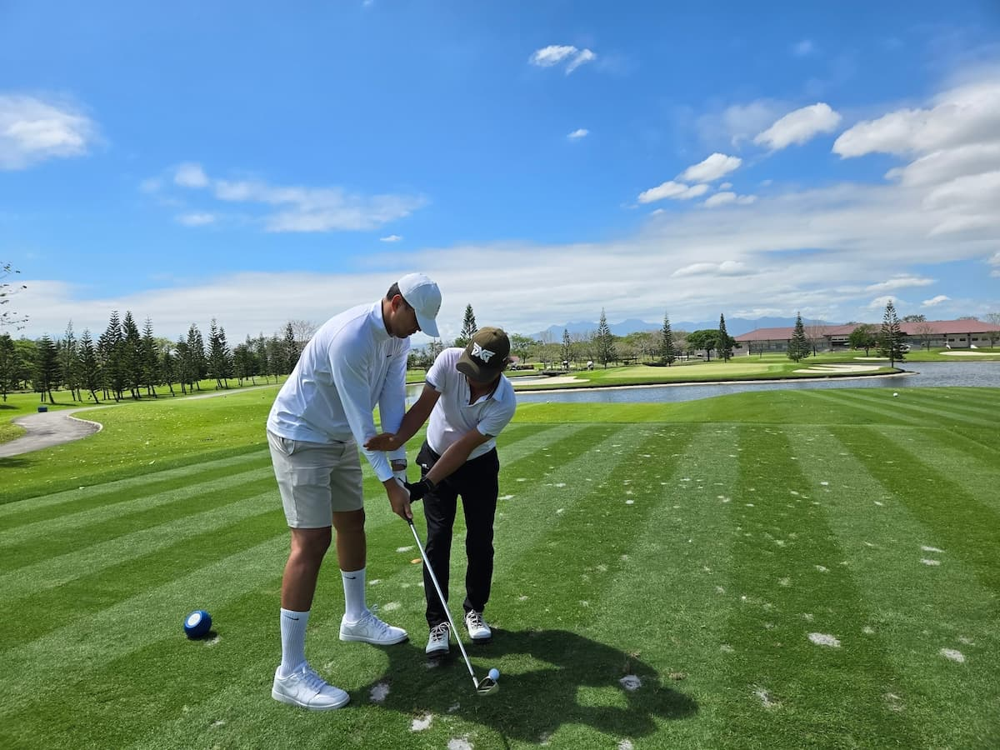
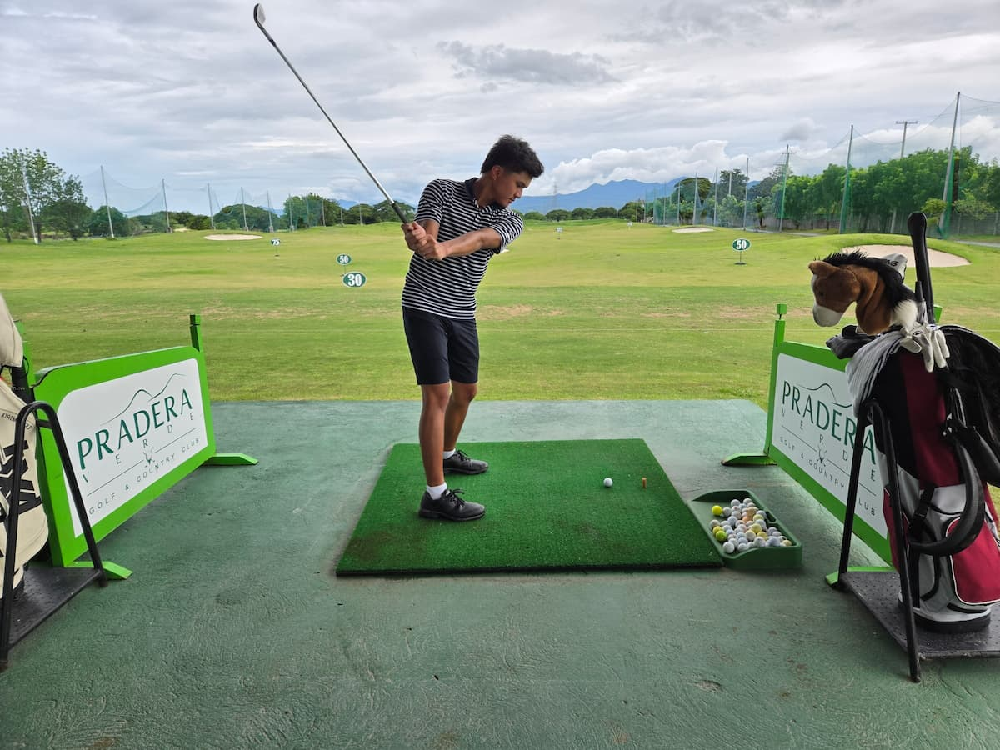

클락에서 25년 넘게 골프를 가르치다 보면 별의별 몸과 별의별 사연을 다 만난다. 그중에서도 지난 6월, 197cm 거구의 사내가 40.5인치 아이언을 들고 필드에 선 순간은 오래 기억에 남을 것 같다. 이 글은 전직 PBA(필리핀 프로농구) 스타 커비 레이몬도와, 그의 아들 Gaby를 가르친 이야기다.
2009년, 팜팡가 벌판에 9홀짜리 골프장 하나가 문을 열었다. Beverly Place C.C. 게리 플레이어가 설계했다는 이력은 나중에야 알았다. 나에게 이 골프장이 특별했던 이유는 그런 명성 때문이 아니다. 그저 여기서는 나 홀로 골프가 가능했다. 푸시 카트를 끌고, 캐디와 나란히 걸으며 라운드를 돌던 그 시절, 여기서 만난 인연들의 소박함이 나에겐 마치 엄마의 품 같았다.
7년이 흐르고 코스는 18홀이 됐다. 그 사이 수많은 한국 골퍼들이 아직 여물지 않았던 내 레슨을 받고 각자의 자리로 흩어져 갔다. 그렇게 나는 베벌리에서 코치로 성장했다.
2024년, 나는 프라데라로 스카웃되었다. 이곳의 회원들은 격이 달랐다. 변호사, 의사, 레스토랑 사장, 덤프트럭 20대를 굴리는 사업가 - 이곳에서 가장 "낮은" 직급이 수빅 관세구역 검시관이었을 정도다. 베벌리가 한국에서 온 네이버 카페 회원들을 위한 곳이었다면, 프라데라는 필리핀 로컬을 위한 무대였다. 필리핀 골프 붐의 서막이 오르고 있었고, 나는 그 한복판에 서 있었다.
그리고 지난 6월, 메신저로 전화가 한 통 걸려왔다.
커비였다. 작년 5월 서울로 돌아오기 직전까지 나에게 레슨을 받던 친구다. 키 197cm의 장신, 전직 프로농구 선수. 이 친구가 쓰는 7번 아이언은 40.5인치다. 보통 성인 남성용 표준이 37인치인 걸 감안하면, 몸 자체가 이미 표준 규격을 벗어나 있었다.
처음 만났을 때부터 그는 어디선가 배운 듯한 기본기를 갖추고 있었다. 나의 레슨은 패키지 방식이다 - 월 12,000페소에 연습장 레슨 13회, 그린피 2회 무료, 페어웨이 9홀 레슨 무료. 커비는 연습장보다 필드 레슨에 집중했다.
운동신경이 남다르다는 건 금방 알 수 있었다. 잘못된 부분을 교정하며 "왜 그런지" 운동 법칙을 설명하면, 그는 그대로 이해하고 몇 번이고 다시 시도했다. 스포츠 전공자를 가르칠 때는 잡다한 디테일이 필요 없다. 원리 하나만 정확히 인지시키면, 몸이 스스로 그 원리를 따라간다.
문제는 실전이었다. 필드에 서면 그는 멀리 보내고 싶어했다. 그때마다 나는 조용히 타일렀다.
그는 이렇게 가르치던 나를 그리워했던 모양이다. 미국에서 아들이 방학을 맞아 집에 왔는데, 나에게 레슨을 받게 하고 싶다며 전화를 걸어온 것이었다.
나는 골프 선수가 되려고 골프를 하는 게 아니라, 골프는 어디까지나 서브잡이라고 늘 말해왔다. 아들의 스윙 영상을 보내와서 봤더니, 임팩트 순간이 제법 돋보였다. 내가 프라데라로 못 오면 아들과 둘이 서울로 오겠다고까지 했다.
속으로 "아서라 이놈아" 하며, 이곳에서 골프를 필드로 배우는 하루 비용과 숙식·교통비까지 계산해서 말해줬다. 돈이 아무리 넘쳐도 혀를 내두를 금액이라는 걸 나는 알고 있었다. 결국 그가 항공료를 줄 테니 빨리 오라고 했다. 마침 다른 회원 한 분도 있어서, 6월 29일 먼저 클락으로 들어갔다.
6월 30일부터 아들 Gaby를 가르쳤다. 열아홉 살, 아버지를 닮아 키가 크지만 아버지만큼은 아니다. 엄청난 미남이었다. 미국에서 방과 후 간간이 프로에게 레슨을 받는다고 했다.
4일 내내 연습장에서 스윙을 교정했다. 그런데 좀처럼 "프로가 되기 위한" 스윙으로는 변형이 이루어지지 않았다. 개구리가 앉았다 뛰어오르는 듯한 동작 - 굳이 이런 스킬이 없어도 꼿꼿이 서서 쳐도 5번 아이언이 180야드 이상 날아가니 당장 큰 문제는 아니다. 하지만 프로의 문턱을 넘으려면 이것만으로는 부족하다는 평가를, 나는 아버지에게 남기고 돌아왔다.
세계를 돌아다녀 본 가락과, 골프가 무엇인지 품평할 줄 아는 것. 내가 가장 잘 아는 두 가지다. 세상 구경의 껍질을 벗기고 그 속으로 들어가 보려는 일은 늘 쉽지 않다. 골프라는 단단한 껍질을 깨고 그 안을 들여다보는 데까지는 성공했지만, 그 안의 내용물을 온전히 파헤치는 건 여전히 어렵다.
필리핀의 농구 스타와 그 아들을 가르치면서도, 나는 알맹이를 건질 때까지 그들을 붙잡아야 했다는 걸 안다. 하지만 나는 늘 도망쳐 왔다. 무엇이 나를 도망치게 했을까. 이제는 이 세계를 벗어나 또 다른 신세계로 넘어가야 할 때가 되었기 때문이 아닐까.